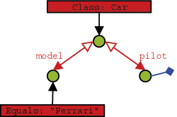

Retrieving Structured Objects
QBE
To retrieve all cars a simple 'blank' prototype can be used.
1private static void retrieveAllCarsQBE(ObjectContainer container) { 2
Car proto = new Car(null); 3
}

Now let's initialize the prototype to specify all cars driven by Rubens Barrichello.
1
What about retrieving a pilot by car? You simply don't need that -if you already know the car, you can simply access the pilot field directly.
1
Native Queries
Using native queries with constraints on deep structured objects is
straightforward, you can do it just like you would in plain other code.
Let's constrain our query to only those cars driven by a Pilot with a
specific name:
01private static void retrieveCarsByPilotNameNative( 02
ObjectSet results = container.query(new Predicate<Car>() { 05
} 08
 ObjectSet results
ObjectSet results SODA Query API
In order to use SODA for querying for a car given its pilot's name you have to descend two levels into our query.
1
You can also constrain the pilot field with a prototype to achieve the same result.
1
Descending into a query provides you with another query. Starting out from a query root you can descend in multiple directions. In practice this is the same as ascending from one child to a parent and descending to another child. The queries turn one-directional references in objects into true relations. Here is an example that queries for "a Pilot that is being referenced by a Car, where the Car model is 'Ferrari'":
1
